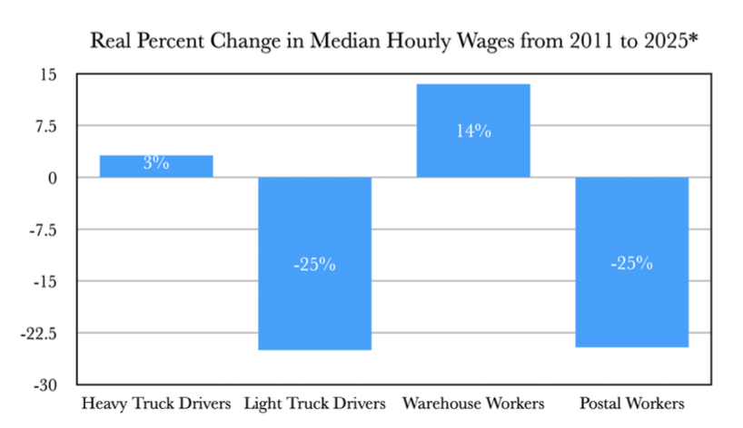
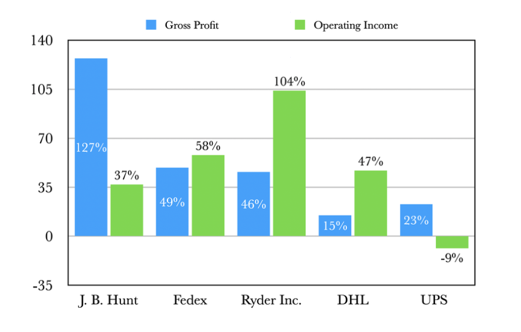

WHAT IS THE LOGISTICS INDUSTRY?
The logistics industry involves the transporting and warehousing goods/commodities. This includes express delivery (either light trucks provided by companies or flex options like personal vehicles—this counts USPS mail carriers as well), heavy freight shipping (either by road, air, or sea), and all warehouse labor (package handling, sortation, loading/unloading, fork lift operation, maintenance of vehicles, cleaning, etc.).
The logistics sector, from same-day Amazon delivery to cargo trucking across the country, is an integral part of the American and global economy, generating hundreds of billions of dollars each year in revenue and linking every single industry together in a vast interconnected supply chain of shipping, freight, and transport.
HOW MUCH HAS THE LOGISTICS INDUSTRY GROWN IN THE LAST DECADE?
It is not at all revolutionary to point out the tremendous growth of logistics—especially e-commerce and express delivery—over the past two decades. Workers can certainly feel it. More packages, more volume, more hours, and more intensity. Even bathroom breaks, most infamously, waste too much time. After all, executives and shareholders need their margins nice and fat. But we, in this little pamphlet, want to go beyond what one may or may not feel. We want to get down to the hard facts. Truths which no amount of posturing nor manipulation by Wall Street suits can obscure. Therefore, we must take a look at and properly interpret some figures to see just how much the logistics industry has grown in America over the last decade and a half.
HOW MUCH HAVE REAL WAGES CHANGED?
Logistics workers (which the Bureau of Labor Statistics—or BLS— categorizes under the industry code of “Transportation and Warehousing”) made an average of 30 dollars an hour in 2025.1 In 2011, that was 21 dollars an hour. Though, like most already know, inflation confuses things, as it would show a misleading rise of 43 percent. Therefore we must utilize something called the Consumer Price Index which economists use to calculate real changes in price across different years. So accounting for inflation, logistics workers saw a real increase of just .09 percent in average hourly wages from the years 2011 to 2025, or in other words, practically no growth. Let’s zoom in further.
Starting off with drivers, according to the BLS, “Heavy and Tractor - Trailer Truck Drivers” made an average nominal wage of 19 dollars an hour in 2011, going up to around 29 dollars an hour in 2025; hardly a 6 percent increase in real wages. On the other hand, “Light Truck/ Delivery Service Drivers” saw a rise from 21 dollars an hour in 2011 to only 27 an hour in 2025. Meaning, that despite a nominal increase of 28 percent, the purchasing power of their hourly wages actually decreased by 10 percent. What about warehouse workers? “Laborers and Material Movers” (i.e. package handlers, loaders, vehicle cleaners, etc.) saw an improvement of roughly 9 percent in average hourly wages and “Industrial Truck and Tractor Operators” (operators of fork lifts, lift trucks, etc.) saw roughly a 5 percent increase. Postal workers on the other hand, taken together, saw a decrease of 18 percent in average wages! So even though one trade of workers saw somewhat of an increase, it was hardly meaningful. The rest of the industry saw utter stagnation and even a significant decline in their wages.
Though, an average of 30 dollars an hour isn’t terrible even if it’s warped by inflation, right? Yes and no. That figure is ultimately misleading. It is the industry average. And in acquiring that average, the government database compiles together the hourly earnings of not just regular workers, but the hourly wages of top corporate and chief logistics executives (which are, by the way, upwards of 130 dollars an hour). In other words, the data is terribly skewed. We must therefore look at the median hourly wage, as that will give us a figure which reflects the most common wage, accounting for outliers. In the logistics industry today, that is not 30 but 25 dollars an hour.
So if we go back to our previous calculations, since the median logistics wage was 19 an hour in 2011, the real purchasing power of median hourly earnings for all logistics workers across a decade and a half actually decreased by 7.8 percent. Thus, for the vast majority of transportation, delivery, and warehousing workers, wages buy less than they did 14 years ago. And, as most can probably attest, they were hardly substantial back then in the first place.
For express delivery (or light truck) drivers, the median wage in 2025 was 22.89 an hour. In 2011, that was 21.36. Which means that the real hourly wages for these workers have decreased by 25 percent! Much worse than the 10 percent drop previously mentioned. Here’s how other logistics trades stack up:

From this, it is possible that a postal worker or light truck driver could be made resentful towards warehouse workers or heavy truck drivers for getting a larger piece of the pie. Or, moreover, warehouse workers could potentially feel all the more better off. But these sentiments are only the result of deceitful tactics by the capitalists of logistics. On the one hand, warehouse wages are, and have been historically, so low that even a rise in 13 percent only amounts to 21 dollars an hour, which after taxes, is below 40,000 dollars annually (so a raise is now hardly a raise—and the bosses absolutely know this!). On the other hand, light truck drivers and postal workers, despite a decline in wages, still on average make more hourly and annually than those in the warehouse. They also have the opportunity to make more generally the longer they work. The point is that pay increases, bonuses, competitive pay, etc., as well as the pay disparity across different trades, will always be used by companies to fuel fierce competition among workers, evade blame and foment misplaced resentment. It is financially sound for the capitalists if one section of workers gets a pay bump while another gets a wage cut. The real fear they hold is if workers shed these technical differences, let go of the blame game, and band together into one whole regardless of their trade, demanding better wages across the board.
In spite of this, one could quickly refute to say that this is all due to the logistics industry growing from 4.9 million workers in 2010 to roughly 7.6 million in 2025, amounting to around a 51 percent increase. With so many new workers, there is only so much these companies can hand out, no? Well, let’s see just exactly how much companies and the capitalists who own them have gained from the logistics boom.
HOW MUCH HAVE CORPORATIONS GROWN?
Accounting for inflation, Amazon saw a staggering 2,269 percent increase in gross annual profit between the years 2011 and 2025.2 Many esteemed economists would of course retort, “gross profit doesn’t tell the whole story!” And they’d be right. Looking at their operating income, which was a frugal 862 million in 2010 and 79.9 billion in 2025, Amazon saw a 6,418 percent increase, more than double the growth of their profit. If that’s not enough, their net income grew 8,550 percent. And total assets? A 2,183 percent increase. These numbers are larger- than-life and it can be really easy to have trouble conceptualizing the gargantuan size they represent. But by understanding the rate of growth, we can begin to see a clearer picture. Logistics worker’s median wages compounded -.58 percent per year while the four Amazon metrics used (net income, gross profit, assets, and total assets) compounded with a median value of 30 percent per year. This percentage is exponential, meaning that if logistics workers and Amazon both started at the same value of 100 then worker’s wages, across 14 years, would shrink to a value of 92.18 while Amazon would reach 3,937.5 in the same amount of time.
Amazon is not alone in this meteoric rise. XPO Inc., formerly XPO Logistics, made an annual gross profit of roughly 30 million dollars in 2011. In 2025 that went up to 8.1 billion showing around an 18,880 percent increase across 14 years. And their operating income, which rose from 2 million in 2011 to 657 million in 2025? A 23,000 percent increase. Both of these figures compounded at 43 and 45 percent per year respectively. Such expansion, despite explosive, is hardly surprising for most—especially Amazon as it seems to have invaded every corner of the American economy from tech to entertainment. Let us then look at the real percent change in gross profit and operating income of other American logistics companies, for it will reveal many more hidden truths:

What can we gain from this? Firstly, the rise in capital and wealth is abundantly clear for most logistics companies in the past decade compared to the relative stagnation and decline of median logistics wages. This is not a coincidence. For companies to see nicer margins, they must cut their most burdensome cost of all: wages. This is because, 1) logistics companies advance a vast amount of constant capital in the form of warehouses, trucks, automation, etc., and thus cannot offload such costs as quickly, and 2) profits (or more specifically: surplus-value; value given to the capitalist by the worker at no cost) and wages are opposed to one another within the production (or transportation) of any given commodity or good. When wages are higher, the surplus a company extracts from the labor of workers is a lot less substantial. When wages are lower, surplus can double or even triple on itself. What’s more, we have one prominent outlier among the companies in UPS. Why is this the case? Simple: there is no other company in America that is as unionized as UPS, touting a 70 percent unionization rate under the International Brotherhood of Teamsters.
WHAT IS THE ROLE OF UNIONS IN THE STRUGGLE FOR HIGHER WAGES?
Unions, like the Teamsters, inherently hinder and impede the insatiable drive for profit that companies like UPS have. Unfortunately as of late, this is usually done through minor judicial means. And companies are still making a profit off the backs of workers no matter how unionized they are. Regardless, unions always pose a threat due to their strongest weapon of all: the strike. UPS cannot generate revenue or operate as a company if there are no workers to lug the cargo, to drive the trucks, or to sort the packages. For example, in August of 1997, after negotiations for a new contract stalled, the Teamsters called a strike which included almost 100 percent of the entire unionized workforce of UPS. The strike lasted for 15 days, resulting in 600 million dollars lost by UPS and better wages and benefits for workers in their new contract.3
It is important to note that workers do not necessarily need a union to strike—and they definitely shouldn’t wait to first become unionized prior to striking if the sentiments or ability are already present. Moreover, union leadership today, including the Teamsters as well as others, have certainly shown themselves to not be up to the task of explicitly fighting for the betterment of the workers they represent, nor showing their teeth towards the executives they claim to fight against. If anything, as they demonstrated in 2023 by avoiding a potentially historic strike, they seek merely to wage that terrible slow and bureaucratic “battle” against UPS. At the end of the day, workers are themselves the building blocks of all unions, and so they must therefore trust in themselves and in those who struggle for nothing but their interests.
That being said, the numbers and history have shown that unions do make it necessarily easier to organize strikes and thereby force concessions from employers as they are material manifestations of workers organizing together into one indissoluble unit thereby posing a real and concrete challenge against the might of capital. Bringing up what we touched on earlier, unions, particularly industrial ones like the Teamsters which place different kinds of workers under one banner (instead of more singular craft unions), get rid of technical or occupational-specific distinctions, stripping away the gloss of antagonisms between workers and revealing ever more the essence of real antagonisms within modern society; i.e. the cleavage into that of two diametrically opposed camps: those who own the factories, warehouses, trucks, fork lifts, etc., versus those who only own their ability to work, selling it in exchange for a wage; i.e. capital on one side and labor on the other.
WHAT IS THE REALITY OF WAGES?
Texan logistics workers, and workers in general, are defined by the forced sale of their ability to labor in exchange for a wage in order to survive. On the surface, this relation appears fair. An employer hires someone to fulfill a task or role and, in return, monetary compensation is issued. However, this act masks the exploitative nature of the economic system of capitalism of which American society operates on. In matter of fact, it is fair only for those employers, the capitalists, who buy up this labor-power and set it to work, afterwards appropriating the aforementioned surplus value created by these laborers. This, alongside the imperialist exploitation of the colonized world in far away lands, is why when it is said that America is a “rich” country, it means rich only for a minuscule portion of the population who work not one hour out of the entire year. The cash flows from the American working class’ hands and into the capitalists pockets each and every day, whether it is in an Austin warehouse, a steel factory in Houston, or a Walmart in Lubbock.
For American logistics workers, whether they are here in Texas or elsewhere, they know the reality of this system all too well. Over the last two decades, they have been squeezed for every drop of productivity, every morsel of growth, producing substantially more value than the wages they are paid. And still, this meager little ration is now falling. This wage which allows workers to scrounge together enough to buy food, a place to live, transportation, etc., and all of the other means necessary for subsistence. This wage which chains the laboring masses of the proletariat to the cold bitter ground.
CONCLUSION
Ultimately, the figures expounded above show clearly the decline in the purchasing power of logistics workers’ wages over the last decade and a half, and that, generally, unions slow down this immense profit drive—and demonstrating that when profit is slowed down, wages speed up. UPS drivers on average, for instance, make more in hourly earnings than other logistics workers employed by Amazon, Fedex, USPS, etc. Therefore, it is very straight-forward that higher wages can be achieved by workers forming a new union (or joining a pre-existing one) and thereafter exercising its collective power—i.e. organizing a strike. And if existing union leadership stands in the way of such an act, it is a leadership which goes against what unions stand for. Therefore, workers must either force them to heed their demands or work to replace them entirely (which can—and should—consist of all possible measures like creating a new union).
That, however, is much easier said than done. Amazon, for example, spent roughly 26 million dollars on union-busting efforts in 2025 alone.4 Fedex and Amazon also both employ the Delivery Service- Partner (DSP) business model, where drivers do not technically work for either company, but for franchise DSPs. So, legally speaking, workers can only unionize with their specific DSP and not with Amazon or Fedex as a whole. Such legal loopholes make it that much harder for unions to take root. And even if they do, as we have already mentioned, many of them are bureaucratic nightmares like the Teamsters, only ever fighting against UPS in minor ways and ultimately acting as peace guards between the workers and the capitalists of UPS (which means they are on the side of the latter).
Though, despite these obstacles put up against labor organizing, it only exposes the deep fear held by these “powerful” corporations and their labor lackeys that once the mass of workers bind together into one whole, into one fighting force, they will force a raise in wages rather than be made to beg for one.
If through their collective strength workers form a union today, the threat that tomorrow they may clamor for so much more, like the abolition of the wage-relation entirely and the capitalist system along with it, weighs like a nightmare upon the minds of not just the capitalists in UPS, but the rest of logistics capitalists and of the American capitalist class in general. Any step which encroaches upon the property of Amazon, Fedex, Ryder Inc., XPO, or UPS, encroaches upon the property of capitalists everywhere. And they will fight tooth and nail to fight for every single inch lost, for every single dollar wasted. Together, workers should—studying these parasites—learn to fight back all the same and develop the movement against exploitation, against oppression, against capital.
- All wage data used is from the US Bureau of Labor Statistics. The brunt of the data was pulled from the “Occupational Employment and Wage Statistics (OEWS) Profiles” section of their website:
- All corporate data used was sourced from: https://www.macrotrends.net/ stocks/stock-screener
- 1997 United Parcel Service strike. (2023, November 1). Wikipedia.
- Jamieson, D. (2026, April). Amazon just spent a crazy amount of money on union- busters. HuffPost.